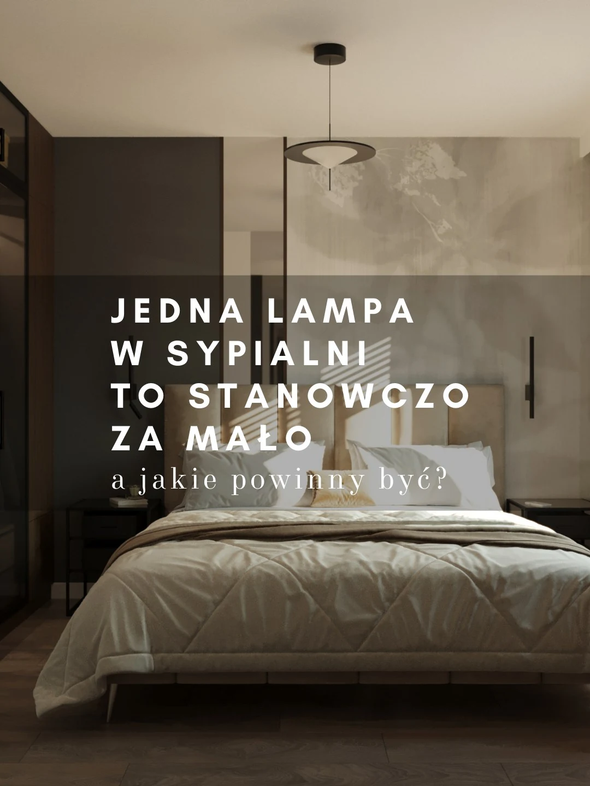
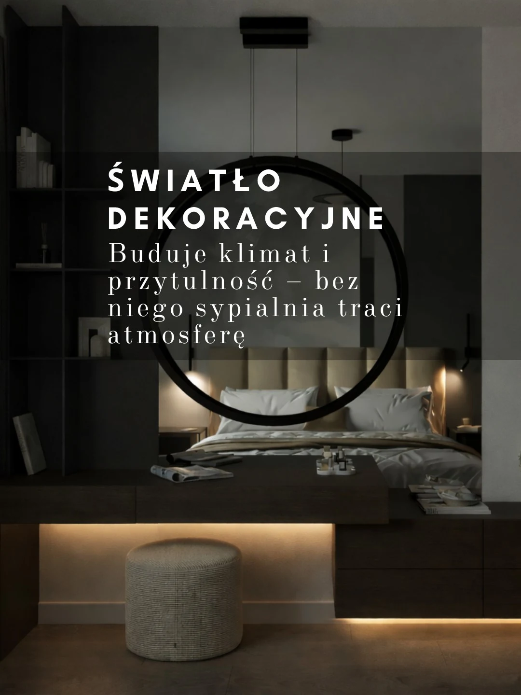

Trzy warstwy światła
Światło ogólne. To główne oświetlenie pomieszczenia, najczęściej sufitowe: plafon, minimalistyczna lampa wisząca albo nowoczesne oprawy punktowe. Powinno dawać równomierne, rozproszone światło, które ułatwia codzienne funkcjonowanie.
Światło zadaniowe. Wszystkie źródła, które wspierają konkretne czynności: lampki nocne do czytania, kinkiety po bokach łóżka, oświetlenie przy toaletce. Dobrze, jeśli świecą punktowo i mają osobne włączniki, bo wtedy precyzyjnie sterujesz nastrojem.
Światło dekoracyjne. Tu liczy się klimat: taśmy LED pod łóżkiem, listwy przy suficie, lampki na komodzie, świeczki. To one sprawiają, że wnętrze robi się przytulne.

Temperatura barwowa ma znaczenie
Światło ciepłe (2700–3000 K) sprzyja relaksowi i tworzy przytulny nastrój, więc idealnie pasuje do sypialni. Światło zimne (powyżej 4000 K) nadaje wnętrzu biurowy charakter i utrudnia wyciszenie wieczorem. Dlatego polecamy barwę ciepłą, a jeśli chcesz, żeby było jaśniej, ale nadal wygodnie, neutralną (3500 K).
Nie zapomnij o szafie
Jeśli Twoja szafa ma pełne drzwi albo sięga sufitu, zadbaj o jej dodatkowe oświetlenie. Dobrze sprawdzają się taśmy LED z czujnikiem ruchu. Najlepiej podłączyć je do instalacji na etapie remontu, ale jeśli jest już za późno, pomogą gotowe lampki ładowane przez USB albo zasilane bateriami, z czujnikiem ruchu. Mały szczegół, a ogromna różnica w codziennym komforcie.
Co z tego wynika w praktyce
Zaplanuj punkty świetlne i gniazdka, zanim zaczniesz remont. Dopisanie ich później oznacza kucie w świeżo wykończonych ścianach.
Daj światłu zadaniowemu osobne włączniki, żeby można było zgasić światło główne i zostawić tylko lampkę do czytania.
Wybieraj ciepłą barwę we wszystkich źródłach w jednym pokoju, żeby nie mieszać różnych odcieni.
Kinkiety nad łóżkiem zawieszaj z uwzględnieniem wysokości zagłówka i przymierz je wcześniej na żywo.
Chcesz, żeby oświetlenie w Twojej sypialni było zaplanowane od początku? Pierwsze spotkanie jest bezpłatne. Umów spotkanie.